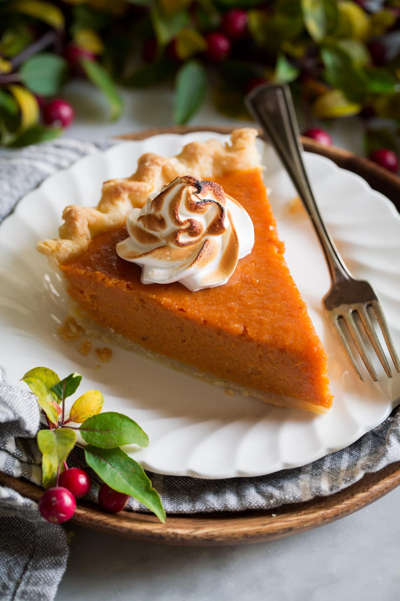

Sweet Potato Pie

The perfect Sweet Potato Pie recipe!
If you like pumpkin pie you’ll love sweet potato pie. They’re very similar in taste but this recipe is made with fresh, baked sweet potatoes (instead of canned pumpkin) and it includes browned butter so you know it’s going to be good!
There are a few steps to the process of making it but it’s worth every step once you get to taste this luscious pie.
Ingredients
- 1 cup (142g) unbleached all-purpose flour (scoop and level to measure)
- 2 tsp (8 g) granulated sugar
- 1/4 tsp (heaping) salt
- 8 Tbsp (113g) unsalted butter, well chilled, cut into small cubes
- 3 - 5 Tbsp ice water
- 1 1/2 lbs sweet potatoes (about 3 medium), such as red garnet
- 6 Tbsp (85g) salted butter, diced into 1 Tbsp pieces
- 1 (5 oz) can evaporated milk (2/3 cup)
- 3/4 cup (150g) packed light brown sugar
- 2 large eggs
- 1/2 tsp ground cinnamon
- 1/2 tsp ground nutmeg
- 1/4 tsp ground ginger
- 1/4 tsp salt
- 1 tsp vanilla extract
Instructions
- To make crust: In a medium mixing bowl whisk together 1 cup flour, 2 tsp sugar and heaping 1/4 tsp salt. Add butter and cut into mixture using a pastry blender until there are just small pea size clumps of butter throughout.
- Add ice water 1 Tbsp at a time and toss until mixture is just moistened and comes together in bigger clumps. Gather mixture into a ball and shape and press into a smooth, 6-inch round on a lightly floured surface. Cover and refrigerate until dough is more firm, about 60 minutes.
- Remove dough, roll out into a 12-inch round on a lightly floured surface. Fold in half then into a quarter or wrap around a rolling pin and transfer to a 9-inch standard pie plate and unwrap. Fit to plate, flute edges if desired.
- Refrigerate until well chilled about 1 hour or freeze for 15 minutes. Meanwhile preheat oven to 400 degrees.
- Line crust with a sheet of foil or parchment paper (cover to edges), add dry beans, rice, sugar or pie weights to fill just level to the top. Bake pie in preheated oven 15 minutes.
- Hold all four corners of foil and remove beans. Prick bottom of pie crust about 10 times. Return to oven and continue to bake until it's starting to dry, about 8 - 12 minutes longer. Remove crust and let cool on a wire rack.
- To bake sweet potatoes: (You can do this step while the pie dough is chilling) prick sweet potatoes once on each side with a fork. Wrap each potato individually in a sheet of foil. Place on a baking sheet.
- Bake sweet potatoes in 400 degree oven until very soft all the way through when pierced with a knife or skewer, about 50 - 60 minutes (depending on their size). Let cool about 30 minutes until just warm.
- To brown the butter: while sweet potatoes are cooling brown the butter in a light colored medium skillet. To do so add butter to skillet, set over medium heat and cook, stirring occasionally, until butter has a nutty fragrant smell and light brown flecks. Careful not to burn it. Transfer butter to a dish to cool so it doesn't continue to cook and burn.
- To make sweet potato pie filling: Heat oven to 350 degrees. Halve sweet potatoes, scoop out flesh. Transfer to a large mixing bowl and mash very well with a potato masher until nearly smooth. There should be 2 cups mashed sweet potatoes.
- Add browned butter, evaporated milk, brown sugar, eggs, cinnamon, nutmeg, ginger, salt and vanilla. Using an electric hand mixer blend mixture until combined.
- Pour mixture into prepared pie crust. Place on a baking sheet, tent edges with foil. Bake in preheated oven until center just wiggles slightly, about 40 - 50 minutes.
- Transfer to a wire rack to cool 2 hours. Chill until ready to serve. When serving top with sweetened whipped cream or homemade marshmallow fluff if desired.